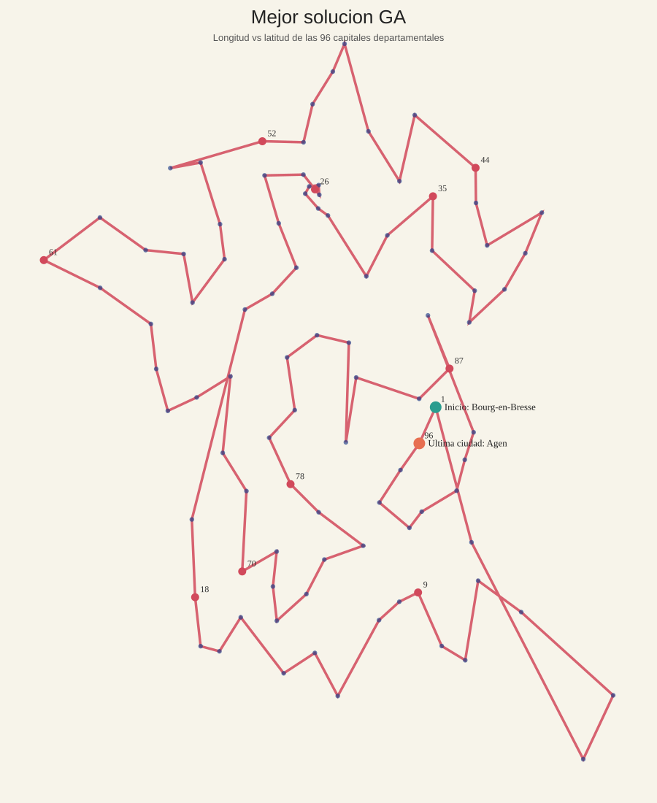
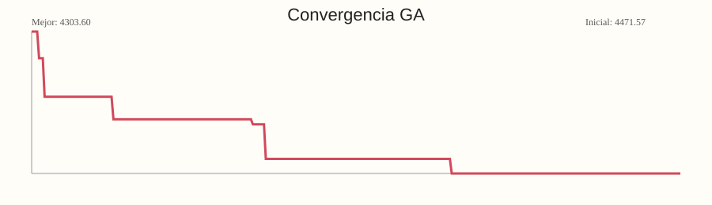

Este notebook consolida la etapa final del proyecto: - carga resultados de ACO y GA - compara ambos metodos - selecciona la mejor solucion - expande el tour TSP a una ruta real sobre el grafo - genera visualizaciones y GIF - exporta artefactos listos para entrega y para la web
Ver codigo
from pathlib import Pathimport sysROOT = Path.cwd().resolve().parent if Path.cwd().name =='notebooks'else Path.cwd().resolve()ifstr(ROOT) notin sys.path: sys.path.insert(0, str(ROOT))ROOT
display(Markdown('### Visualizacion de la mejor ruta'))display(SVG(filename=str(visuals['route_svg_path'])))display(Markdown('### Convergencia del metodo ganador'))display(SVG(filename=str(visuals['history_svg_path'])))
Visualizacion de la mejor ruta

Convergencia del metodo ganador

5. GIF de la mejor solucion
La ruta final se anima para facilitar la comunicacion del resultado en la entrega y en la web.
df_tramos_expandidos = pd.DataFrame(expanded_route_json['tramos_expandidos'])df_resumen_ruta_expandida = pd.DataFrame([{'saltos_tsp': expanded_route_json.get('n_saltos_tsp'),'saltos_reales': expanded_route_json.get('n_saltos_reales'),'costo_total_tour': expanded_route_json.get('costo_total_tour'),'n_tramos_expandidos': len(expanded_route_json.get('tramos_expandidos', [])),'inicio_ruta': expanded_route_json.get('recorrido_real_nombres', [None])[0],'fin_ruta': expanded_route_json.get('recorrido_real_nombres', [None])[-1],}])show_table('Resumen de la ruta expandida', df_resumen_ruta_expandida)show_table('Ruta expandida por tramos (primeros 20)', df_tramos_expandidos.head(20))
Vista previa de la ruta expandida
origen_indice
destino_indice
ruta_indices
costo_tramo
ruta_nombres
0
0
4
[0, 74, 73, 38, 4]
147.731334
[Bourg-en-Bresse, Annecy, Chambéry, Grenoble, ...
1
4
19
[4, 3, 5, 19]
296.891000
[Gap, Digne-les-Bains, Nice, Ajaccio]
2
19
20
[19, 20]
75.034333
[Ajaccio, Bastia]
3
20
5
[20, 5]
219.296333
[Bastia, Nice]
4
5
3
[5, 3]
70.050000
[Nice, Digne-les-Bains]
5
3
83
[3, 83]
75.541667
[Digne-les-Bains, Toulon]
6
83
12
[83, 12]
51.097000
[Toulon, Marseille]
7
12
84
[12, 84]
30.518333
[Marseille, Avignon]
8
84
30
[84, 30]
25.316667
[Avignon, Nîmes]
9
30
34
[30, 34]
25.956333
[Nîmes, Montpellier]
Ver codigo
show_table('Artefactos finales generados', pd.DataFrame([ {'nombre': 'comparacion_metodos.json','ruta': str(final_bundle['comparison_path']),'tipo': 'JSON','proposito': 'Comparacion consolidada entre ACO y GA para consumo final y web.', }, {'nombre': 'mejor_resultado.json','ruta': str(final_bundle['best_result_path']),'tipo': 'JSON','proposito': 'Resultado completo del metodo ganador con tour, costo e historial.', }, {'nombre': 'mejor_ruta_expandida.json','ruta': str(final_bundle['expanded_route_path']),'tipo': 'JSON','proposito': 'Ruta real expandida sobre el grafo a partir del tour TSP ganador.', }, {'nombre': 'resumen_web.json','ruta': str(final_bundle['web_summary_path']),'tipo': 'JSON','proposito': 'Resumen compacto listo para alimentar una interfaz web o demo.', }, {'nombre': 'visualizacion_mejor_solucion.svg','ruta': str(visuals['route_svg_path']),'tipo': 'SVG','proposito': 'Visualizacion vectorial de la mejor ruta encontrada.', }, {'nombre': 'convergencia.svg','ruta': str(visuals['history_svg_path']),'tipo': 'SVG','proposito': 'Grafica de convergencia del metodo ganador durante la optimizacion.', }, {'nombre': 'mejor_solucion_combinatoria.gif','ruta': str(gif_info['gif_path']),'tipo': 'GIF','proposito': 'Animacion progresiva del recorrido final para entrega y presentacion.', },]), columns=['nombre', 'ruta', 'tipo', 'proposito'])
archivo
ruta
0
comparacion_metodos.json
C:\Carlos\Uni\Algortimos\trabajos\trabajo_1\tr...
1
mejor_resultado.json
C:\Carlos\Uni\Algortimos\trabajos\trabajo_1\tr...
2
mejor_ruta_expandida.json
C:\Carlos\Uni\Algortimos\trabajos\trabajo_1\tr...
3
resumen_web.json
C:\Carlos\Uni\Algortimos\trabajos\trabajo_1\tr...
4
visualizacion_mejor_solucion.svg
C:\Carlos\Uni\Algortimos\trabajos\trabajo_1\tr...
5
convergencia.svg
C:\Carlos\Uni\Algortimos\trabajos\trabajo_1\tr...
6
mejor_solucion_combinatoria.gif
C:\Carlos\Uni\Algortimos\trabajos\trabajo_1\tr...
7. Salida final
Al terminar este notebook quedan listos los artefactos finales en: - outputs/visualizaciones - outputs/web
Estos archivos pueden alimentar directamente la entrega escrita, una demo o una web.
Ver codigo
print('Visualizaciones:', VIS_OUTPUT_DIR)print('Bundle final web:', WEB_OUTPUT_DIR)
Visualizaciones: C:\Carlos\Uni\Algortimos\trabajos\trabajo_1\trabajo_carlos\2. optimizacion_combinatoria\outputs\visualizaciones
Bundle final web: C:\Carlos\Uni\Algortimos\trabajos\trabajo_1\trabajo_carlos\2. optimizacion_combinatoria\outputs\web